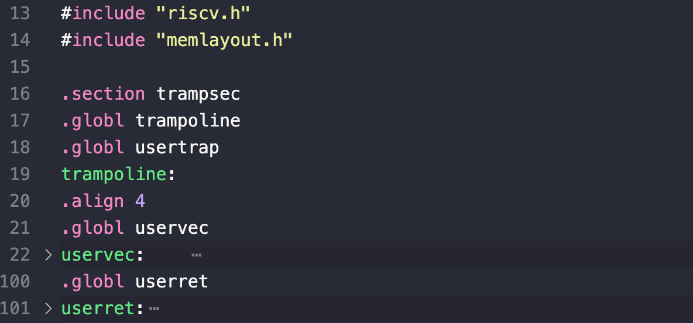
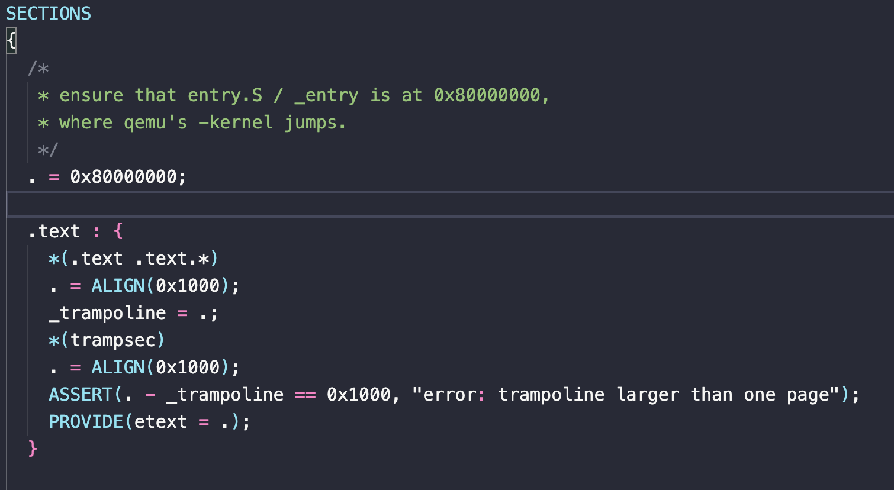

trap
Introduce
本次实验，侧重点在于操作系统中发生 trap 以及如何处理 trap 的过程.
操作系统新的理解
1.kernel 与 CPU 的关系
在 xv6 书中有这样一段话:
Note that the CPU doesn’t switch to the kernel page table, doesn’t switch to a stack in the kernel, and doesn’t save any registers other than the pc. Kernel software must perform these tasks. One reason that the CPU does minimal work during a trap is to provide flexibility to software; for example, some operating systems omit a page table switch in some situations to increase trap performance.
一开始其实不是很理解，或者说还是不那么透彻. 后面在实验的过程中，有了以下的总结:
-
首先是
kernel和CPU的角色， 我们可以把kernel看成是OS的中枢，它是一个程序， 负责管理和调度系统资源。而CPU则是执行指令的硬件，它负责执行kernel中的指令。 -
注意，这里 CPU 本质只是负责处理指令 从某种意义上来说，CPU其实并不知道什么是
系统调用ecall，什么是用户栈， 什么是内核栈，它只知道如何执行指令。 -
以上的这些都是
kernel层面的工作与人为定义的一些机制。而 CPU 所提供的是sscause,stvec,sscratch等寄存器来帮助kernel进行处理。这些寄存器的处理硬件层面的底层机制，在发生特定事件的时候，对这些寄存器的值进行变更,然后把执行权交给一个预设好的地址, 而 kernel 的作用就是利用这些机制来处理这些事件。
所以，综上所述，其实书中的那段话的目的就是，我们只希望 CPU 做最少的事情，只需要知道 pc 的值，也就是下一条指令需要执行哪里，然后接收到由kernel 来对特权寄存器的控制
你提到了一个非常好的细节，这涉及到硬件和软件在特权寄存器上的协同工作。
2. kernel 对于硬件资源的控制究竟是什么？
你的理解非常准确，可以分为两类：
- 由 CPU 硬件自动修改的寄存器
- 由内核软件设置的寄存器
1. CPU 硬件自动修改的寄存器
这些寄存器主要用于记录陷阱发生时的现场信息。CPU 硬件会在发生陷阱时，自动将它们的值设置为特定的值，而不需要内核软件的干预。
scause: 当陷阱发生时，CPU 会自动将scause寄存器设置为一个值，用来表示陷阱的原因。sepc: 当陷阱发生时，CPU 会自动将sepc寄存器设置为陷阱发生时的指令地址。sstatus: CPU 会自动修改sstatus寄存器中的一些字段，比如SPP(Supervisor Previous Privilege) 位，用来记录陷阱发生前的特权级。PTE_A(Access Bit): 这是页表中的一个位，而不是寄存器。但它的工作方式类似，当 CPU 硬件通过页表访问一个页面时，如果PTE_A位是 0，硬件会自动将其设置为 1，而不需要软件的干预。
2. 内核软件设置的寄存器
这些寄存器是用来 配置 CPU 陷阱处理行为的。内核软件需要负责在系统启动时或运行中，对它们进行设置。
stvec: 内核需要在启动时，将stvec寄存器设置为陷阱处理程序的入口地址。当陷阱发生时，CPU 会自动跳转到这个地址。-
sscratch: 内核需要在启动时，将sscratch寄存器设置为内核栈的地址。当陷阱发生时，CPU 会自动和栈指针进行交换。 -
CPU 硬件：负责在事件发生时记录状态（
scause,sepc等），并自动执行某些底层操作（如PTE_A的设置）。 - 内核软件：负责在系统运行前和运行时配置硬件的行为（
stvec,sscratch等）。
3. 多核心CPU OS
这里只是顺带提一下，每个 CPU 都会有自己的 trap 处理程序.更准确的说法是 在多核CPU的操作系统中， 每个CPU都拥有平等的能力，都可以执行内核代码，每个核心在需要的时候，都可以进行 kernel 来处理任务, 他们都共享一份代码,所以这里就会存在竞争的关系
4. (important) trampoline page
xv6 操作系统中用户空间陷阱（trap）处理的关键设计和挑战。核心思想是，由于硬件的限制，xv6 必须通过一种名为“蹦床页（trampoline page）”的巧妙机制，来实现从用户态到内核态的无缝切换。
1. 陷阱发生时的硬件限制
这段话的核心挑战是：“RISC-V 硬件在强制执行陷阱时，不会切换页表。” * 当一个用户程序发起系统调用或遭遇异常时，CPU 会从用户态（User Mode）切换到监管态（Supervisor Mode）。 * 但是，它仍然会使用用户程序的页表。
这就产生了一个问题：内核的陷阱处理程序（位于内核空间）的地址，在用户页表中是没有映射的。如果 CPU 直接跳转到那个地址，就会触发一个缺页错误（page fault），导致系统崩溃。
2. xv6 的解决方案：蹦床页 (Trampoline Page)
为了解决这个限制，xv6 引入了蹦床页。
* 物理页：蹦床页是一个普通的物理内存页，它上面存放着uservec、userret等汇编代码。
* 双重映射：这个蹦床页的物理地址被同时映射到两个页表中：
1. 每个用户进程的页表：映射到虚拟地址 TRAMPOLINE。
2. 内核页表：也映射到虚拟地址 TRAMPOLINE。
* 权限：在用户页表中，这个映射的页表项没有 PTE_U 标志。这意味着，只有当 CPU 处于监管态时，才能访问这个页。这确保了用户程序无法直接执行蹦床页上的代码，从而保证了安全性。
3. 陷阱处理的详细流程
有了蹦床页，整个陷阱处理过程变得清晰：
- 陷阱发生：用户程序执行
ecall或触发异常。- CPU 特权级从用户态切换到监管态。
- 页表保持不变，仍是用户页表。
stvec寄存器已经被内核设置为TRAMPOLINE的地址。
- 跳转到
uservec：- CPU 根据
stvec寄存器的值，跳转到TRAMPOLINE地址。 - 由于用户页表中有
TRAMPOLINE的映射，这次跳转是成功的。 - CPU 开始执行
uservec中的汇编代码。
- CPU 根据
- 在
uservec中切换页表：uservec汇编代码在执行时，会保存用户寄存器，并从p->trapframe中获取内核页表的地址。- 它通过
csrw satp, ...指令，将 CPU 的页表切换到内核页表。 - 切换完成后，CPU 继续执行，但现在使用的是内核页表。
- 无缝过渡：
- 切换到内核页表后，
uservec可以继续执行，因为它知道内核页表也有TRAMPOLINE的映射。 uservec完成所有准备工作后，会跳转到usertrap这个 C 函数，从而将控制权交给内核。
- 切换到内核页表后，
总的来说，其实就是 我们需要支持用户态与内核态之间的无缝切换， RISC-V 硬件具有不会切换页表的限制，所以我们给用户页表和内核页表都映射了一个 trampoline page，这样就可以在发生 trap 的时候，直接跳转到 trampoline page 上的代码进行处理。
4. 具体的实现
首先，我们知道的是可以从 pagetable 那一页的内容中知道，我们给 kernel address 和 user address 都映射了一个 trampoline page
具体的地址都是 MAXVA - PAGE
代码实现: (只包含部分代码,并不是全部)
1 2 3 4 5 6 7 8 9 10 11 12 13 14 15 16 17 18 19 20 21 22 23 24 | |
上述的代码主要就是对 user space 和 kernel space 对于 trampoline page 的映射。我们可以看到，TRAMPOLINE 的地址是 MAXVA - PAGE，而 trampoline 是一个物理地址。
trampoline.S && kernel.ld
下面就是在 trampoline page 中放置 uservec 和 userret 代码。
我们在 trampoline.S 中对 uservec 和 userret 函数进行定义，放置在了 section 段

然后在 .ld 文件中进行定义:

. = 0x80000000;：这行代码告诉链接器，程序的起始地址（_entry）应该被放置在0x80000000处。这与 QEMU 启动时所期望的地址相匹配。*(.text .text.*)：这行代码告诉链接器，将所有输入文件（.o文件）中的.text段（所有编译好的代码）都放在这里。_trampoline = .;：这是关键。它定义了一个名为_trampoline的符号，其值是当前地址（.）。*(trampsec)：这行代码告诉链接器，将所有输入文件中的trampsec段放在这里。ASSERT(...)：这确保了trampsec段的大小正好是一页（0x1000），从而为蹦床页的映射提供了保证。PROVIDE(etext = .);：这定义了另一个符号etext，代表代码段的结束地址。
用户态发生 trap 的时候发生了什么
当用户态发生了 trap 的时候，CPU 会自动的将特权升级成 S mode, 并且跳转到 stvec 中的地址(stvec 中的地址就是 handler), 也就是 TRAMPOLINE 的地址。
而我们上述已经说明了 TRAMPOLINE 刚开始就是 uservec 的函数地址
1 2 3 4 5 6 7 8 9 10 11 12 13 14 15 16 17 18 19 20 21 22 23 24 25 26 27 28 29 30 31 32 33 34 35 36 37 38 39 40 41 42 43 44 45 46 47 48 49 50 51 52 53 54 55 56 57 58 59 60 61 62 63 64 65 66 67 68 69 70 71 72 73 74 75 76 77 78 | |
上下文， 然后进行了跳转到 t0 这个地址，也就是 usertrap() 函数中。我们看上述的 ld t0 , 16(a0) 这行代码，其实得到的就是 p->trapframe->kernel_trap 的地址
在上一次的 usertrapret() 中，我们已经设置了 p->trapframe->kernel_trap = (uint64)usertrap; 这样就可以跳到处理 usertrap 的代码段了。
1 2 3 4 5 6 7 8 9 10 11 12 13 14 15 16 17 18 19 20 21 22 23 24 25 26 27 28 29 30 31 32 33 34 35 36 37 38 39 40 41 42 43 44 45 46 47 48 49 | |
第一次的 stvec 是谁设置的呢？
答案很显然，就是一开始 trapinit() 的函数中设置的
1 2 3 4 5 6 7 8 9 10 11 12 13 14 15 16 17 18 19 20 21 22 23 24 25 26 27 28 29 30 31 32 33 34 35 36 37 38 39 40 41 42 43 44 | |
cpuid()==0 的时候，进行了一系列的初始化的操作。为了我们能让将来的 trap 能够顺利的运行。我们统一进行了 trapinithart() 的初始化.
我们统一的都将所有的 stvec 的地址指向 kernelvec. 后续在 allocproc() 的时候，会把 p->context.ra = (uint64)forkret;，然后后续会调用 forkret, 其中就会默认执行一次 usertrapret， 从而可以保证 stvec 的值就是 uservec 的地址。
实验实现
alarm
这个实验比较困难，主要是需要对
trap的处理有一个比较深入的理解。
这个实验的目的:
- 首先，我们知道的是 OS 中会有一个
timer, 它会定时触发一个trap, 也就是scause的值为01L<<63 | 5 - 我们需要实现的是一个
sys_sigalarm(int, void(handler*)())它是一个类似计时触发的函数，当tick的值为0的时候，说明就不需要触发, 否则如果tick > 0, 那么我们就会开始计时，如果时间到了，那么就刷新时间戳，并且直接调用handler函数。 - 其实就可以知道，我们是从 kernel 跳回 userspace 来执行我们的 handler 函数，同时也需要执行完之后，重新sigturn 回到kernel
所以，我们需要进行一个保存上下文，在 struct proc 中加入一个 ori_trapframe 的结构体，用于保存当时的现场，在return 的时候需要复原回去
因为我们需要 restore caller-saved registers(a0-a7, t0-t7) 和 callee-saved registers(s0-s11)